BC-Bench — AL extension benchmark
sources: 2026-06-18-203228-darts_replay · 2026-06-18-191506-claude_code · 2026-06-18-203228-darts_replay
Overall ranking
Score by task
| Task | Codex (GPT-5 CLI) | Claude Code | Darts |
|---|---|---|---|
| Rental / Real Estate Management 03-rental-management | 6.8 | 5.3 | 3.9 |
| Average | 6.80 | 5.30 | 3.90 |
Average score by axis
| Axis | Weight | Codex (GPT-5 CLI) | Claude Code | Darts |
|---|---|---|---|---|
| Functional correctness | 50% | 6.70 | 5.80 | 2.50 |
| Code quality | 10% | 4.20 | 3.30 | 4.20 |
| Spec understanding | 10% | 8.70 | 7.30 | 6.00 |
| Production readiness | 20% | 7.30 | 4.00 | 6.00 |
Each axis is scored deterministically by max-scaling the per-criterion levels: 10 × Σ(weight × level) ÷ Σ(weight × 3). The overall score is a weighted blend — Functional correctness (50%), Code quality (10%), Spec understanding (10%) and, where a task defines it, Production readiness (20%) — normalized over the axes a task was actually graded on.
Rental / Real Estate Management
Real-estate rental: projects, properties, lease contracts, recurring billing, signatory locking, termination.
Click any criterion to expand — each agent’s council verdict, individual grader votes, reasoning, and evidence (screenshots, OData queries, code).
›F-01Document numbering and posting G/L accounts are drawn from configurable setup (No. Series and G/L account setup), not hardcoded in business logic.FailFailPass
Opus 4.7 · run 0Fail

trigger OnInsert()
var Project: Record "REM Project";
begin
if ("Project No." <> '') and Project.Get("Project No.") then begin
if "Payment Terms Code" = '' then ... // no NoSeriesMgt.GetNextNo callNo matches foundOpus 4.7 · run 0Fail
field(10; "Property No. Series"; Code[20]) { TableRelation = "No. Series"; }
field(11; "Contract No. Series"; Code[20]) { TableRelation = "No. Series"; }table 50102 "Lease Contract" { ... no OnInsert trigger, no NoSeriesMgt.GetNextNo call anywhere ... }table 50101 "Property" { ... no OnInsert trigger ... }NoSeriesMgt: Codeunit "No. Series"; // declared but NEVER invoked
Card page has no OnNewRecord/OnInsertRecord wiring No.Series.Opus 4.7 · run 0Pass


GetRentalSetup(RentalSetup);
RentalSetup.TestField("Project Nos.");
RealEstateProject."No. Series" := RentalSetup."Project Nos.";
RealEstateProject."No." := NoSeriesMgt.GetNextNo(RentalSetup."Project Nos.", WorkDate());RentalSetup.TestField("Rental Income Account");
...
SalesLine.Validate("No.", RentalSetup."Rental Income Account");›F-02A Real Estate Project setup record can be created with project-level configuration defaults.PassPassFail
Opus 4.7 · run 0Pass
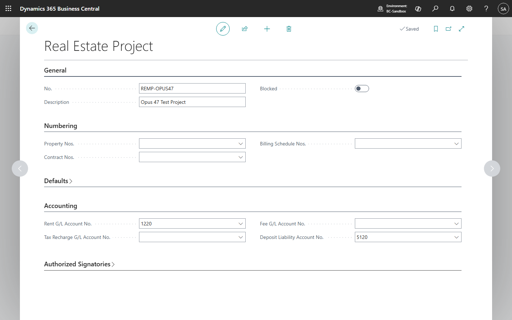
table 50100 "REM Project" { ... field(3; "Property Nos."; Code[20]) { TableRelation = "No. Series"; } ... field(6; "Default Bank Account No."; ...); field(7; "Default Payment Terms Code"; ...); field(13; "Default Template Code"; TableRelation = "REM Contract Template"; }Opus 4.7 · run 0Pass
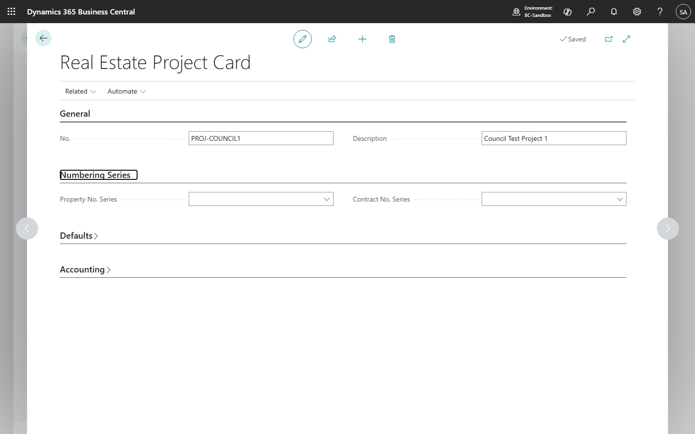
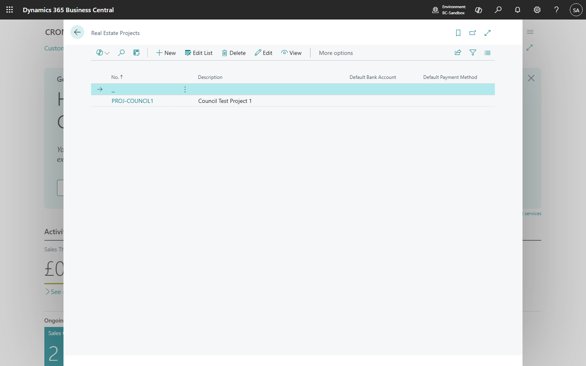
field(10; "Property No. Series")
field(11; "Contract No. Series")
field(20; "Default Bank Account")
field(21; "Default Payment Method")
field(22; "Default Payment Terms")
field(30; "Deposit G/L Account")
field(31; "Rental Income G/L Account")table 50106 "Contract Template" — separate template list associable via LeaseContract."Contract Template Code"Opus 4.7 · run 0Fail
field(20; "Bank Account Code"; Code[20]) { TableRelation = "Bank Account"; }
field(21; "Payment Method Code"; Code[10]) { ... }
field(22; "Payment Terms Code"; Code[10]) { ... }
// no Signatory or Contract Template association fields›F-03A Property (rentable unit) card can be created with the minimum required property data.PassPassFail
Opus 4.7 · run 0Pass
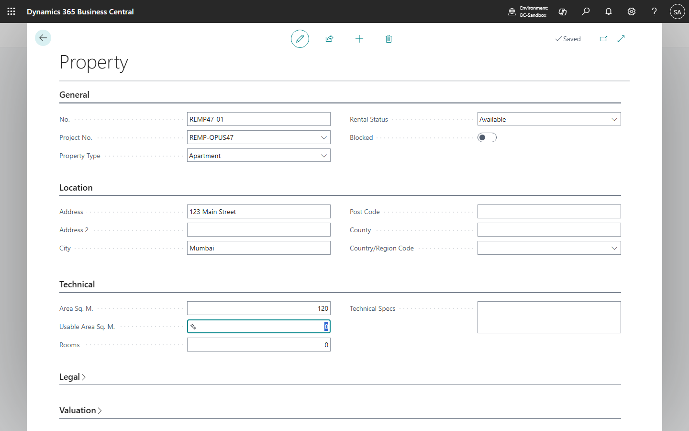
table 50103 "REM Property" { ... field(1; "No."); field(2; "Project No."); field(3; "Property Type"); field(4; "Rental Status"); field(5-10; address); field(11-13; area); field(14-17; technical/legal); field(20-22; energy certification); }Opus 4.7 · run 0Pass
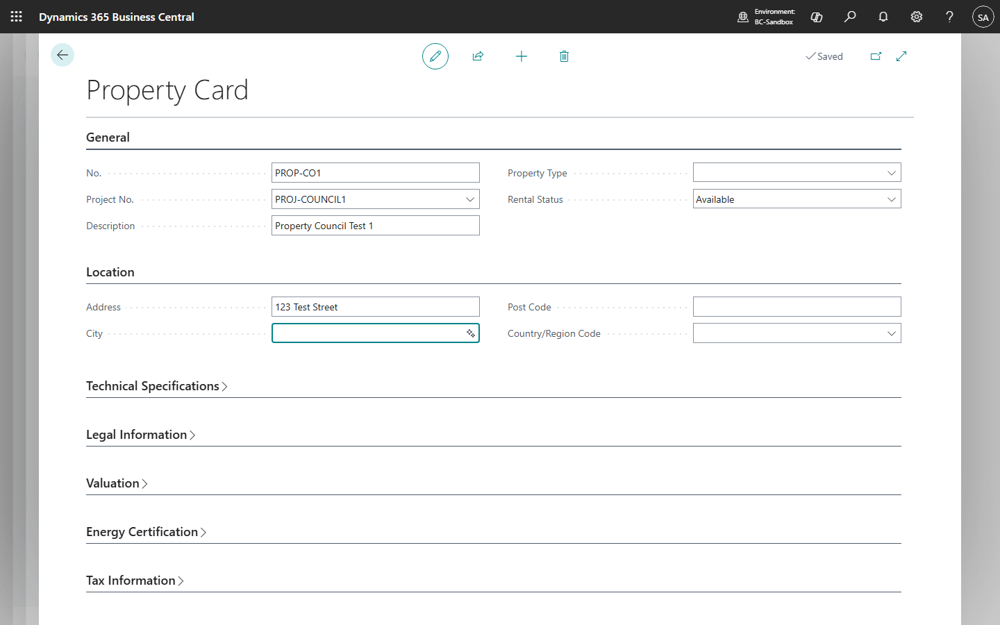

field(1; "No.")
field(2; "Project No.")
field(10; "Property Type")
field(11; "Rental Status")
field(20; "Address")
field(30; "Area (sqm)")
field(40; "Registry Reference")
field(60; "Energy Efficiency Rating")Opus 4.7 · run 0Fail
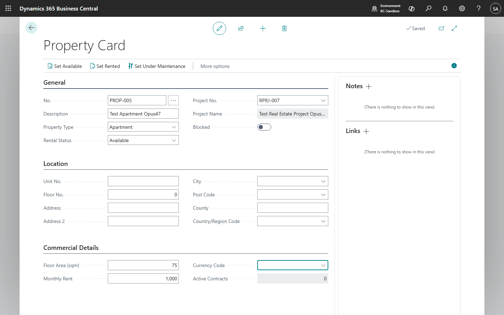
field(3; "Property Type"; Enum "Property Type")
field(4; "Rental Status"; Enum "Rental Status")
field(20; "Floor Area (sqm)"; Decimal)
field(21; "Floor No."; Integer)
field(22; "Unit No."; Code[20])
// no registry/legal data or energy-certification fields›F-04A lease contract can be created linking one or more properties and one or more tenants with its minimum contract data.PassPassPass
Opus 4.7 · run 0Pass

table 50104 "REM Contract" { field(1; "No."); field(2; "Project No."); field(3; "Primary Tenant No."); field(5; "Primary Property No."); field(6-7; Start/End Date); field(8; Status); field(9; "Base Rent"); field(10; "Deposit Amount"); field(14; "Contract Template Code"); ...Opus 4.7 · run 0Pass


field(1;"No.")
field(2;"Project No.")
field(3;"Tenant No.")
field(10;"Start Date")
field(11;"End Date")
field(12;Status)
field(20;"Base Rent")
field(30;"Deposit Amount")
field(50;"Contract Template Code")table 50103 "Contract Property" — many-to-one link contract↔propertyOpus 4.7 · run 0Pass
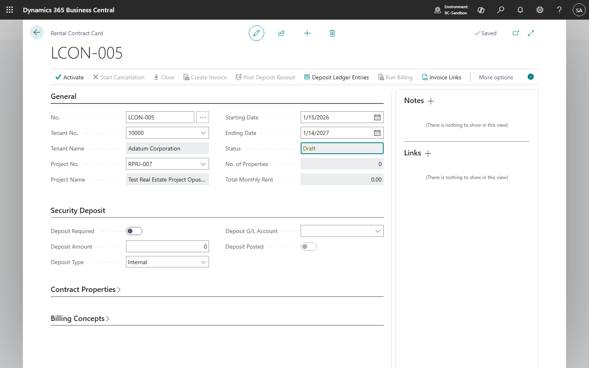
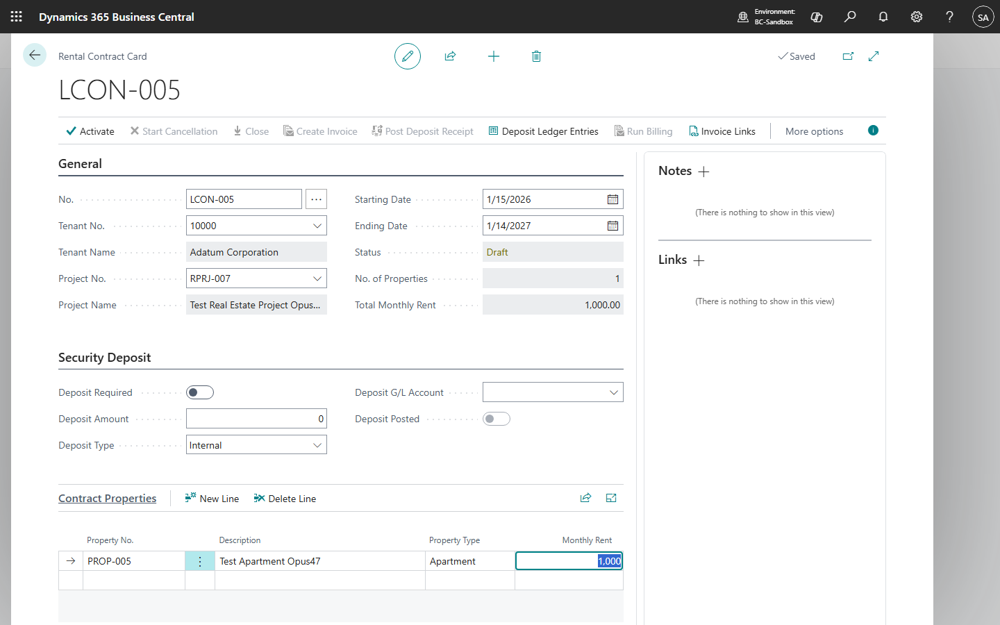
field(2; "Tenant No."; Code[20]) TableRelation = Customer;
field(4; "Project No."; Code[20])
field(6; "Starting Date"; Date)
field(7; "Ending Date"; Date)
field(10; Status; Enum "Lease Contract Status")
field(51; "Deposit Amount"; Decimal)›F-05A contract transitions from Draft/Pending to Active only after signatory validation, and the linked property reflects the active lease.PassPassFail
Opus 4.7 · run 0Pass prerequisite not set up
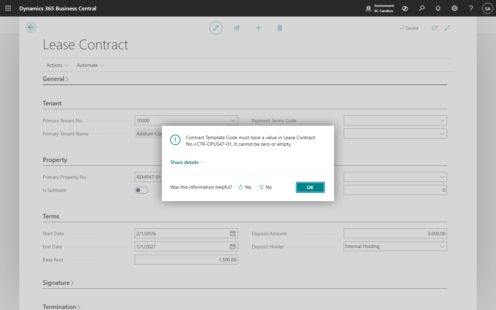
ValidateLegalReadiness: TestField Project No./Tenant/Property/Dates/Base Rent/Contract Template Code; Template.Get; if Template."Legal Review Required" and not Contract."Legal Review Complete" then Error; ProjectSignatory IsEmpty -> Error; if not Contract."Required Signatories Approved" then Error; ActivateContract: Status := Active; Property."Rental Status" := Leased; Property.Modify.Opus 4.7 · run 0Pass


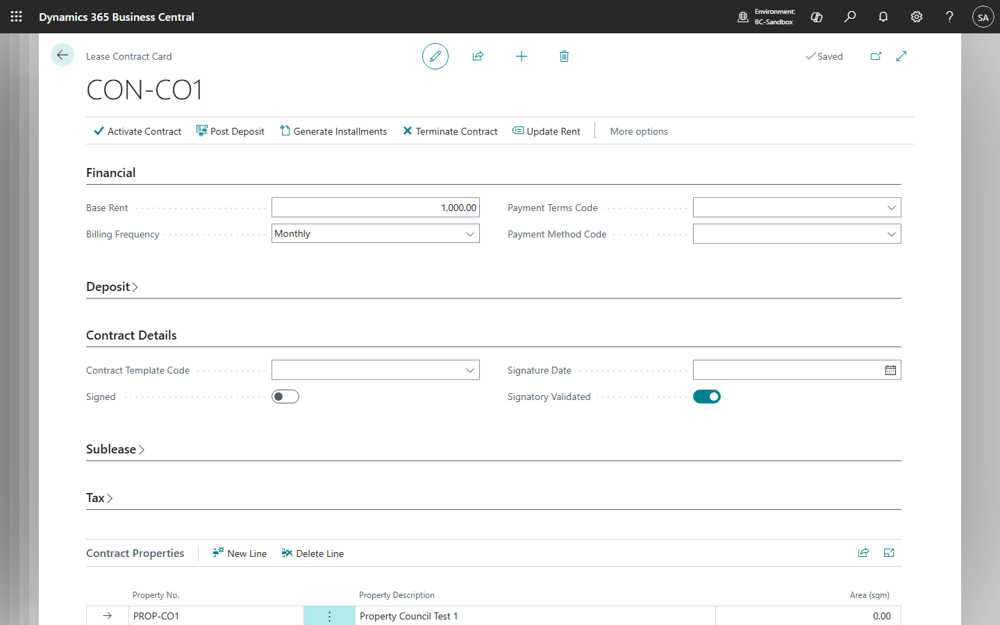
if not LeaseContract."Signatory Validated" then Error(SignatoryNotValidatedErr);
...
LeaseContract.Status := LeaseContract.Status::Active;
LeaseContract.Modify();
... Property."Rental Status" := Property."Rental Status"::Rented; Property.Modify();Opus 4.7 · run 0Fail
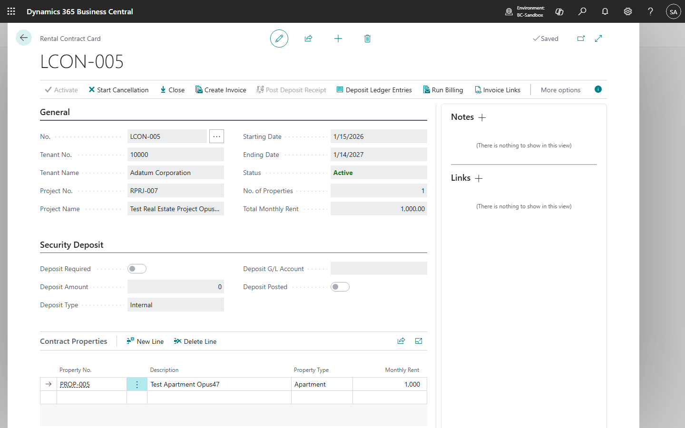
if RentalContract."Tenant No." = '' then Error(NoTenantErr, ...);
if (RentalContract."Starting Date" = 0D) ...
RentalContractLine.SetRange("Contract No.", ...);
if RentalContractLine.IsEmpty() then Error(NoPropertiesErr, ...);
// NO signatory validation anywhere
RentalContract.Status := RentalContract.Status::Active;›F-06A security deposit can be captured on the contract and posted with the correct internal/external holding distinction.FailFailPass
Opus 4.7 · run 0Fail
PostInitialDeposit -> CreateDepositEntry; CreateDepositEntry: DepositEntry.Init/Insert(true) into REM Deposit Entry table; AuditMgt.LogEvent(...). No GenJnlPostLine/Gen.JournalLine, no Sales-Post, no Customer/G/L ledger writes.No matches foundOpus 4.7 · run 0Fail

GenJnlLine.Init();
GenJnlLine."Journal Template Name" := 'GENERAL';
...
GenJnlLine."Bal. Account No." := RealEstateProject."Deposit G/L Account";
GenJnlLine.Description := StrSubstNo(DepositDescTxt, LeaseContract."No.");
LeaseContract."Deposit Posted" := true;
LeaseContract.Modify();// PostDeposit ends here — NO GenJnlLine.Insert, NO GenJnlPostLine.RunWithCheck(GenJnlLine); the journal line is never persisted, no posting ever occurs.Opus 4.7 · run 0Pass result not observable
GenJnlLine."Account Type" := GenJnlLine."Account Type"::"G/L Account";
GenJnlLine."Account No." := DepositAccountCode;
GenJnlLine."Bal. Account Type" := GenJnlLine."Bal. Account Type"::Customer;
GenJnlLine."Bal. Account No." := RentalContract."Tenant No.";
GenJnlPostLine.RunWithCheck(GenJnlLine);
DepositLedgerEntry."Deposit Type" := RentalContract."Deposit Type";
DepositLedgerEntry.Insert(true);field(52; "Deposit Type"; Enum "Deposit Type")
field(53; "Deposit G/L Account"; Code[20])
field(54; "Deposit Posted"; Boolean) Editable = false;›F-07A recurring billing schedule of installments/quotas can be generated for an active contract.PassPassFail
Opus 4.7 · run 0Pass result not observable
GenerateMonthlyRentSchedule: while PeriodStart <= ToDate do begin Schedule."Contract No." := ...; Schedule."Period Start/End" := ...; Schedule."Concept Code" := 'RENT'; Schedule.Amount := Contract."Base Rent"; Schedule.Insert(true); LineNo += 10000; PeriodStart := CalcDate('<1M>', PeriodStart); end;action(GenerateRent) { trigger OnAction() begin BillingMgt.GenerateMonthlyRentSchedule(Rec, Rec."Start Date", Rec."End Date", false); end; }Opus 4.7 · run 0Pass
while CurrentDate <= EndDate do begin
RentalInstallment.Init();
RentalInstallment."Contract No." := LeaseContract."No.";
... case BillingFrequency ... CalcDate('<+1M-1D>'...) ...
RentalInstallment."Base Rent Amount" := LeaseContract."Base Rent";
... IBI + AdditionalAmount + Total ...
RentalInstallment.Insert();action(GenerateInstallments) { trigger OnAction() ... RentalMgt.GenerateInstallments(Rec); Message(InstallmentsGeneratedMsg); }Opus 4.7 · run 0Fail
PeriodStart := CalcDate('<-CM>', BillingDate);
PeriodEnd := CalcDate('<CM>', BillingDate);
// processes a single month only
BillingPeriodBuffer.DeleteAll();
PopulateBillingBuffer(...);TableType = Temporary;›F-08Recurring billing supports simulate vs. create and posts invoices to standard BC documents and ledgers.FailFailFail
Opus 4.7 · run 0Fail
CreateSalesInvoices: SalesHeader.Validate("Document Type", Invoice); SalesHeader.Validate("Sell-to Customer No.", ...); SalesHeader.Insert(true); SalesLine.Insert(true); Schedule.Status := Invoiced; Schedule."Sales Invoice No." := SalesHeader."No."; Schedule.Modify(true); // NO SalesPost.Run(SalesHeader)No matches foundOpus 4.7 · run 0Fail
SalesHeader.Init();
SalesHeader."Document Type" := SalesHeader."Document Type"::Invoice;
SalesHeader.Insert(true);
SalesHeader.Validate("Sell-to Customer No.", LeaseContract."Tenant No.");
... SalesLine.Insert(true); ...
RentalInstallment.Invoiced := true;
RentalInstallment."Invoice No." := SalesHeader."No.";// CreateInvoiceFromInstallment ends here. NO SalesPost.Run(SalesHeader) anywhere in the codeunit. The Sales Header/Lines remain as a DRAFT invoice; never posted to Customer Ledger / G/L.No matches foundOpus 4.7 · run 0Fail
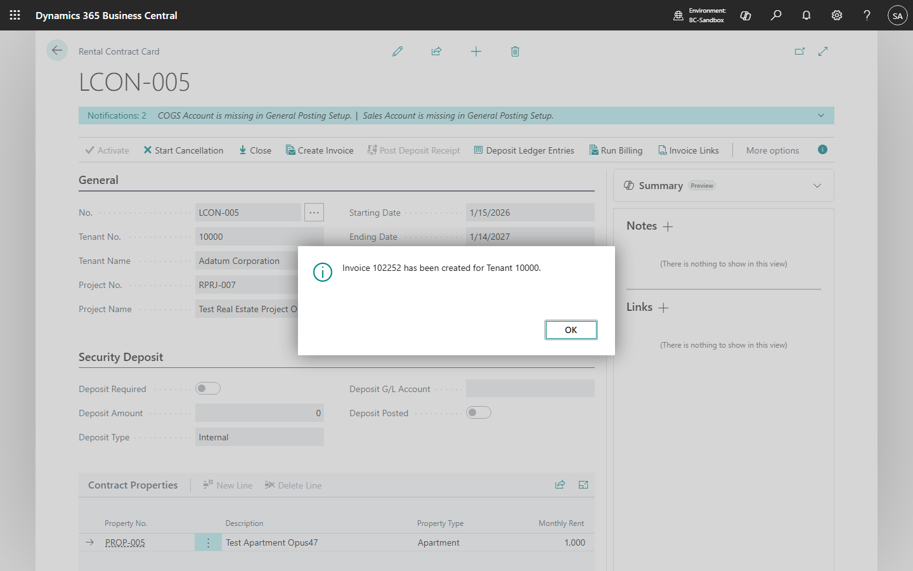

SalesHeader.Init();
SalesHeader."Document Type" := SalesHeader."Document Type"::Invoice;
SalesHeader.Insert(true);
SalesHeader.Validate("Sell-to Customer No.", RentalContract."Tenant No.");
...
SalesLine.Insert(true); SalesLine.Validate(...);
// NO SalesPost.Run(SalesHeader) anywhereSalesHeader.Insert(true);
SalesLine.Insert(true);
SalesLine.Validate(...);
Message('Invoice %1 has been created for Tenant %2.', SalesHeader."No.", RentalContract."Tenant No.");
// no posting call›F-09Property tax / IBI can be recharged to the tenant and recalculated after a tax update without double billing.PassPassFail
Opus 4.7 · run 0Pass result not observable
GenerateIBIRecharge: ... Schedule.SetRange("Concept Code", 'IBI'); Schedule.SetRange("IBI Year", IBIYear); Schedule.SetFilter(Status, '%1|%2', Open, Invoiced); if not Schedule.IsEmpty() then Error('IBI recharge for year %1 is already open or invoiced ...'); Schedule."Period Start" := DMY2Date(1,1,IBIYear); ...key(DuplicateGuard; "Contract No.", "Concept Code", "Period Start", "Period End"); trigger OnInsert begin PreventDuplicateBilling(); end; ... Error('Billing already exists for contract %1, concept %2, and period %3..%4 ...')Opus 4.7 · run 0Pass UI navigation failed
Property."Annual IBI Tax" := NewAnnualIBI;
Property.Modify();
... RentalInstallment.SetRange(Invoiced, false);
RentalInstallment.SetFilter("Due Date", '>=%1', WorkDate());
... RentalInstallment."IBI Amount" := CalculateIBIForInstallment(LeaseContract); ...Opus 4.7 · run 0Fail
no matches found across all AL sourcevalue(0; "Base Rent") { }
value(1; Fee) { }
// no Tax/IBI value›F-10A rent update / renewal can extend the contract and update its rent and schedule.PassPassFail
Opus 4.7 · run 0Pass result not observable
RenewContract: NewContract.TransferFields(Contract, false); NewContract."No." := NewContractNo; NewContract."Renewal Of Contract No." := Contract."No."; NewContract."End Date" := NewEndDate; NewContract."Base Rent" := NewRent; NewContract.Insert(true). ApplyRentUpdate: writes REM Rent History row (Old/New rent, Effective Date, Indexation%) and Contract.Modify.Opus 4.7 · run 0Pass UI navigation failed
RentUpdateHistory.Init(); RentUpdateHistory."Contract No." := LeaseContract."No."; RentUpdateHistory."Previous Rent" := OldRent; RentUpdateHistory."New Rent" := NewRent; ... RentUpdateHistory.Insert();
LeaseContract."Base Rent" := NewRent; LeaseContract.Modify();
... ExtendContract: if NewEndDate <= LeaseContract."End Date" then Error(ExtensionDateErr); LeaseContract."End Date" := NewEndDate; LeaseContract.Modify(); RentalMgt.GenerateInstallments(LeaseContract);action(UpdateRent) { ... RentUpdate.UpdateRent(Rec, NewRent, EffectiveDate, 'Manual Update'); Message(RentUpdatedMsg); }Opus 4.7 · run 0Fail
no matchesactions { Activate, StartCancellation, CloseContract, CreateInvoice, PostDeposit, DepositEntries, RunBilling, InvoiceLinks }
// no Renew / RentUpdate / Extend action›F-11A sublease contract can be created against a primary contract within the allowed scope.PassPassFail
Opus 4.7 · run 0Pass result not observable
ValidateSublease: if not Contract."Is Sublease" then exit; Contract.TestField("Parent Contract No."); if ParentContract."Is Sublease" then Error('Sub-subleasing is not allowed.'); ... TotalSubleasedArea += ChildContract."Sublease Area Sq. M."; if TotalSubleasedArea > GetContractArea(ParentContract) then Error('Sublease area %1 exceeds parent contract available area %2.', ...);Opus 4.7 · run 0Pass UI navigation failed
field(60; "Allow Sublease"; Boolean)
field(61; "Max Sublease Area"; Decimal)
field(62; "Parent Contract No."; Code[20]) { TableRelation = "Lease Contract" ... trigger OnValidate: if ParentContract."Parent Contract No." <> '' then Error(SubsubleaseNotAllowedErr); if not ParentContract."Allow Sublease" then Error(SubleaseNotAllowedErr); }Area OnValidate: if LeaseContract."Parent Contract No." <> '' then ParentContractProperty.SetRange(...); if "Area (sqm)" > ParentContractProperty."Area (sqm)" then Error(SubleaseAreaExceedsErr);Opus 4.7 · run 0Fail
no matches›F-12A contract can be terminated, releasing the property and triggering final billing.PassFailFail
Opus 4.7 · run 0Pass result not observable
StartCancellation: if not (Status in [Active, PendingSignature]) then Error; Contract.Status := Cancellation; CloseContract: if not (Status in [Active, Cancellation]) then Error; if Deposit Amount <> 0 then check Settlement entry exists else Error; Contract.Status := Closed; Property."Rental Status" := Available; Property.Modify.Opus 4.7 · run 0Fail
procedure TerminateContract(...)
LeaseContract.Status := LeaseContract.Status::"In Cancellation";
LeaseContract."End Date" := TerminationDate;
LeaseContract.Modify();
... Property."Rental Status" := Property."Rental Status"::Available; Property.Modify();
end; // NO final billing producedaction(Terminate) { ... RentalMgt.TerminateContract(Rec, TerminationDate); Message(ContractTerminatedMsg); }Opus 4.7 · run 0Fail
RentalContract.Status := RentalContract.Status::Closed;
RentalContract.Modify(true);
UpdateLinesStatus(RentalContract);
// release properties when no other active contracts
Property."Rental Status" := Property."Rental Status"::Available;
// NO final billing generated›F-13The security deposit is settled/refunded correctly at contract termination.FailFailFail
Opus 4.7 · run 0Fail
SettleDeposit: if SettlementAmount + RefundAmount <> Contract."Deposit Amount" then Error; if SettlementAmount <> 0 then CreateDepositEntry(...Settlement, -SettlementAmount,...); if RefundAmount <> 0 then CreateDepositEntry(...Refund, -RefundAmount,...); CreateDepositEntry inserts into custom REM Deposit Entry (no Gen.JournalLine, no GenJnlPostLine).No matches foundOpus 4.7 · run 0Fail
No matches// only PostDeposit exists — no settlement/refund procedure anywhere// no Settle/Refund Deposit action on the cardOpus 4.7 · run 0Fail
no matchesaction(PostDeposit) { ... }
action(DepositEntries) { ... }
// no Settle / Refund / Release Deposit action›C-01All custom objects use the registered Object-ID range declared in app.json and consistent affixes.PassFailPass
Opus 4.7 · run 0Pass
"idRanges": [ { "from": 50100, "to": 99999 } ]REMEnums.al: enums 50100-50107; REMTables.al: tables 50100-50111; REMPages.al: pages 50100-50113; REMManagement.Codeunits.al: codeunits 50100-50103 — all within 50100-99999; all objects prefixed 'REM 'Opus 4.7 · run 0Fail
"idRanges": [{ "from": 50100, "to": 99999 }]All custom object IDs observed: tables 50100-50108, pages 50100-50115, codeunits 50100-50102, enums 50102-50106 — all within 50100-99999.table 50102 "Lease Contract"
table 50101 "Property"
table 50100 "Real Estate Project" // NO registered prefix/suffix affix on object namesOpus 4.7 · run 0Pass
"idRanges":[{"from":50100,"to":99999}] — all custom objects 50100..50108 fit insideTab50100..Tab50108, Pag50100..Pag50110, Cod50100..Cod50101, Enum50100..Enum50107, Rep50100 — all within range, consistent prefix›C-02User-facing page fields and actions carry meaningful ToolTips.FailFailPass
Opus 4.7 · run 0Fail
0 (143 page fields, 0 ToolTip declarations)Opus 4.7 · run 0Fail
0 ToolTip occurrences across 14 page files containing 123 field definitions (ratio 0.00 vs required >= 0.80)Opus 4.7 · run 0Pass
Every page field/action inspected (Setup, Project, Property, Contract Card) carries a ToolTip property; coverage ≈ 100%field("No."; Rec."No.") { ... ToolTip = 'Specifies the number of the rental contract.'; }
field("Tenant No."; Rec."Tenant No.") { ... ToolTip = 'Specifies the customer (tenant) linked to this rental contract.'; }›C-03Custom table fields declare an appropriate DataClassification.PassPassPass
Opus 4.7 · run 0Pass
table 50100 "REM Project" { ... DataClassification = CustomerContent; } / table 50103 "REM Property" { ... DataClassification = CustomerContent; } / table 50104 "REM Contract" { ... DataClassification = CustomerContent; } — every table declares CustomerContent at table level (inherited by all fields).Opus 4.7 · run 0Pass
Every custom table field carries an explicit DataClassification = CustomerContent — ratio 100% (above the 90% bar). Personal/customer fields like "Tenant No."/"Tenant Name" are CustomerContent, NOT ToBeClassified.Opus 4.7 · run 0Pass
Every field across Tab50100–Tab50108 declares DataClassification (CustomerContent / SystemMetadata / EndUserIdentifiableInformation for User ID)field(11; "User ID"; Code[50]) { DataClassification = EndUserIdentifiableInformation; }›C-04Financial postings reuse standard BC posting modules rather than custom ledger code.FailFailFail
Opus 4.7 · run 0Fail
SalesHeader.Insert(true); SalesLine.Insert(true); // ... no Codeunit "Sales-Post".Run(SalesHeader)DepositEntry.Init(); DepositEntry.Posted := true; DepositEntry.Insert(true); // direct insert to custom 'ledger-like' tableNo matches foundOpus 4.7 · run 0Fail
0 matches across the entire codebaseSalesHeader.Init(); SalesHeader.Insert(true); ... SalesLine.Init(); ... SalesLine.Insert(true); // never SalesPost.RunGenJnlLine.Init(); ... GenJnlLine.Description := ...; LeaseContract."Deposit Posted" := true; LeaseContract.Modify(); // never Insert or GenJnlPostLine.RunWithCheckOpus 4.7 · run 0Fail
SalesHeader.Insert(true); SalesLine.Insert(true);
// no SalesPost.Run call — invoices never postedDepositLedgerEntry.Init();
DepositLedgerEntry."Contract No." := RentalContract."No.";
...
DepositLedgerEntry.Insert(true); // custom ledger table written directly›C-05The extension exposes integration events around key lifecycle and posting operations.FailFailFail
Opus 4.7 · run 0Fail
No matches foundOpus 4.7 · run 0Fail
0 matches — no integration events published around activation, billing, termination, or deposit settlement.Opus 4.7 · run 0Fail
no matches›C-06Operationally significant events emit telemetry.FailFailFail
Opus 4.7 · run 0Fail
No matches foundOpus 4.7 · run 0Fail
0 matches — no telemetry emitted for billing or lifecycle transitions.Opus 4.7 · run 0Fail
no matches›C-07Critical contract and tariff changes are captured for audit via change log or dedicated history.PassPassFail
Opus 4.7 · run 0Pass
table 50111 "REM Audit Entry" { fields: Entry No. (AutoIncrement), Event Date-Time, User ID, Event Type, Source Table ID, Source No., Description, Old Value, New Value; keys PK + Source }REM Audit Mgt..LogEvent records EventType + sourceTableId + sourceNo + description + Old/New value + UserId + CurrentDateTime; called from ActivateContract (StatusChange), StartCancellation, CloseContract, RenewContract, ApplyRentUpdate (ContractChange), CreateDepositEntry (Deposit).Opus 4.7 · run 0Pass
table 50108 "Rent Update History" — captures Previous Rent, New Rent, Update %, Update Type, User ID, Update Date for each rent changeRentUpdateHistory.Init(); ...RentUpdateHistory."User ID" := CopyStr(UserId, 1, 50); RentUpdateHistory.Insert();0 — no change-log enablement / no audit-history table for contract critical changes beyond rent. The 'Signed' boolean blocks edits to a few fields via OnValidate but does not record who changed what.Opus 4.7 · run 0Fail
no matches (no enablement and no dedicated history tables for rent/tariff/contract changes)›S-01The required core tables of the rental domain are present with their key fields.PassPassPass
Opus 4.7 · run 0Pass
tables 50100 REM Project / 50101 Contract Template / 50102 Project Signatory / 50103 REM Property / 50104 REM Contract / 50105 Contract Property / 50106 Contract Tenant / 50107 Billing Concept / 50108 Billing Schedule / 50109 Deposit Entry / 50110 Rent History / 50111 Audit Entry — all required spec entities presentOpus 4.7 · run 0Pass
tables 50100 Real Estate Project / 50101 Property / 50102 Lease Contract / 50103 Contract Property — all present with minimum spec fields (Project No., Property No., Contract No., Tenant link, Start/End Date, Base Rent, Deposit Amount, Deposit Held By, etc.)field(30; "Deposit Amount")
field(31; "Deposit Held By"; Enum "Deposit Holder")
field(32; "Deposit Posted")Opus 4.7 · run 0Pass
table 50101 "Real Estate Project" — No., Name, Address, Bank, Paymenttable 50102 "Property" — No., Project No., Type, Status, Area, Renttable 50103 "Rental Contract" — Contract No., Tenant No., Project No., Dates, Status, Deposit fieldstable 50105 "Deposit Ledger Entry" — Contract No., Tenant No., Amount, Deposit Type, G/L Account›S-02Role-based capabilities are reflected via permission sets aligned to the four spec roles.FailFailFail
Opus 4.7 · run 0Fail
No matches found — no permissionset objects, no permissions XMLOpus 4.7 · run 0Fail
No matches; no *.PermissionSet.al files exist.Opus 4.7 · run 0Fail
no matchesdirectory does not exist›S-03The contract status enum covers the required lifecycle states.PassPassPass
Opus 4.7 · run 0Pass
enum 50102 "REM Contract Status" { value(0; Draft); value(1; PendingSignature); value(2; Active); value(3; Cancellation) { Caption='In Cancellation Process'; } value(4; Closed) { Caption='Historical / Closed'; } }Opus 4.7 · run 0Pass
enum 50102 "Contract Status" { value(0;"Draft") value(1;"Active") value(2;"In Cancellation") value(3;"Closed") }Opus 4.7 · run 0Pass
value(0; Draft)
value(1; Active)
value(2; "In Cancellation")
value(3; Closed)›S-04Sublease scope rules are modelled (area tracking and nesting limits).PassPassFail
Opus 4.7 · run 0Pass
field(18; "Parent Contract No."; Code[20]) { TableRelation = "REM Contract"; } field(19; "Is Sublease"; Boolean); field(20; "Sublease Area Sq. M."; Decimal);ValidateSublease checks ParentContract."Is Sublease" => Error('Sub-subleasing is not allowed.'); sums sibling sublease areas vs parent contract area => Error if exceeded.Opus 4.7 · run 0Pass
field(60;"Allow Sublease") field(61;"Max Sublease Area") field(62;"Parent Contract No.") { OnValidate: if ParentContract."Parent Contract No." <> '' then Error(SubsubleaseNotAllowedErr); }Area OnValidate: if Sublease and Area > parent area then Error(SubleaseAreaExceedsErr)Opus 4.7 · run 0Fail
no matches›S-05Deposit handling distinguishes internal holding from external agency holding.PassFailPass
Opus 4.7 · run 0Pass
enum 50103 "REM Deposit Holder" { value(0; Internal) { Caption='Internal Holding'; } value(1; ExternalAgency) { Caption='External Agency'; } }TransferToExternalAgency: if "Deposit Holder" <> ExternalAgency then Error; CreateDepositEntry(...ExternalTransfer, -Amount, 'Transfer deposit to external agency');Opus 4.7 · run 0Fail
enum 50104 "Deposit Holder" { value(0;"Internal") value(1;"External Agency") }field(31; "Deposit Held By"; Enum "Deposit Holder")0 matches for a transfer action/procedureOpus 4.7 · run 0Pass
value(0; Internal)
value(1; "External Agency")field(52; "Deposit Type"; Enum "Deposit Type")
field(53; "Deposit G/L Account"; Code[20])field(7; "Deposit Type"; Enum "Deposit Type")
field(9; "G/L Account No."; Code[20])›S-06Recurring billing concepts cover rent, taxes, fees and one-time concepts.PassPassFail
Opus 4.7 · run 0Pass
enum 50105 "REM Billing Concept Type" { value(0; Rent); value(1; TaxIBI) { Caption='Property Tax / IBI'; } value(2; Fee); value(3; OneTime) { Caption='One-Time Charge'; } }table 50107 "REM Billing Concept" { field(2; Description); field(3; Type; Enum "REM Billing Concept Type"); field(4; "G/L Account No."); field(5; "One-Time"; Boolean); field(6; Active); }Opus 4.7 · run 0Pass
enum 50105 "Billing Concept Type" { value(0;"Rent") value(1;"IBI Tax") value(2;"Service Charge") value(3;"Entry Fee") value(4;"Other") }table 50105 with "Concept Type", Amount, "One-Time", "One-Time Invoiced" — base rent + tax/IBI + recurring fees + one-time entry fees representable.Opus 4.7 · run 0Fail
value(0; "Base Rent")
value(1; Fee)field(3; "Billing Type"; Enum "Billing Concept Type")
field(9; "Billing Frequency"; Enum "Billing Frequency")›S-07Scope discipline — the solution stays within rental lifecycle scope without unrelated modules.PassPassPass
Opus 4.7 · run 0Pass
12 tables, 14 pages, 8 enums, 3 management codeunits — every object is rental/lease/property/billing/deposit/audit related; no out-of-scope domains added.Opus 4.7 · run 0Pass
Every object in src/ maps to a spec area: Project (RealEstateProject), Property, LeaseContract / ContractProperty / ContractSignatory / ContractTemplate, BillingConcept / ContractBillingConcept / RentalInstallment / RentalInvoicing, RentUpdate / RentUpdateHistory, ContractStatus / DepositHolder / PropertyType / RentalStatus / BillingConceptType / BillingFrequency enums.Opus 4.7 · run 0Pass
All objects map to project / property / contract / billing / deposit / accounting domains — no unrelated modules›P-01Contract lifecycle actions validate the current status before executing and block illegal transitions.PassFailPass
Opus 4.7 · run 0Pass
StartCancellation: if not (Status in [Active, PendingSignature]) then Error('Only active or pending signature contracts can enter cancellation.'); CloseContract: if not (Status in [Active, Cancellation]) then Error('Only active or cancellation contracts can be closed.'); ApplyRentUpdate: if Status = Closed then Error('Closed contracts cannot be updated.');Opus 4.7 · run 0Fail
procedure ActivateContract(...) — TestField on key fields and Signatory Validated check, but NO `TestField(Status, Status::Draft)` or `if Status <> Status::Draft then Error(...)` — would happily reactivate a Closed/Active contract.procedure CloseContract(var LeaseContract: Record "Lease Contract") begin LeaseContract.TestField(Status, LeaseContract.Status::"In Cancellation"); ... end; // ✓ status guard present hereLeaseContract.SetRange(Status, LeaseContract.Status::Active); // billing skips non-Active contracts (a soft guard, not an error)Opus 4.7 · run 0Pass
if RentalContract.Status = RentalContract.Status::Active then Error(AlreadyActiveErr, ...);
if RentalContract.Status <> RentalContract.Status::Draft then Error(InvalidStatusErr, ...);if RentalContract.Status <> RentalContract.Status::Active then Error(InvalidStatusErr, ...);
// CloseContract requires Active or In CancellationRentalContract.TestField(Status, RentalContract.Status::Active);›P-02Critical fields are validated (TestField or equivalent) before posting or state changes run.PassPassPass
Opus 4.7 · run 0Pass
ValidateLegalReadiness: Contract.TestField("Project No."); TestField("Primary Tenant No."); TestField("Primary Property No."); TestField("Start Date"); TestField("End Date"); TestField("Base Rent"); TestField("Contract Template Code"); ... GenerateMonthlyRentSchedule: TestField("No."); TestField("Base Rent"); CreateSalesInvoices: Contract.TestField("Primary Tenant No.");Opus 4.7 · run 0Pass
LeaseContract.TestField("Tenant No.");
LeaseContract.TestField("Start Date");
LeaseContract.TestField("End Date");
LeaseContract.TestField("Base Rent");
if not LeaseContract."Signatory Validated" then Error(SignatoryNotValidatedErr);LeaseContract.TestField("Deposit Amount");
LeaseContract.TestField("Tenant No.");
... RealEstateProject.TestField("Deposit G/L Account");Opus 4.7 · run 0Pass
if RentalContract."Tenant No." = '' then Error(NoTenantErr, ...);
if (RentalContract."Starting Date" = 0D) or (RentalContract."Ending Date" = 0D) then Error(NoDatesErr, ...);
if RentalContractLine.IsEmpty() then Error(NoPropertiesErr, ...);RentalContract.TestField(Status, ...);
RentalContract.TestField("Tenant No.");
GetRentalSetup(RentalSetup);
RentalSetup.TestField("Rental Income Account");›P-03Money moves only through standard BC posting with balanced, traceable entries.FailFailFail
Opus 4.7 · run 0Fail
Invoice path: SalesHeader.Insert(true); SalesLine.Insert(true); — no SalesPost.Run. Deposit path: DepositEntry.Init/Insert into custom REM Deposit Entry table — no Gen.JournalLine / GenJnlPostLine.No matches foundOpus 4.7 · run 0Fail
GenJnlLine.Init(); GenJnlLine."Journal Template Name" := 'GENERAL'; ... // no Insert, no GenJnlPostLine.RunWithCheckSalesHeader.Insert(true); ... SalesLine.Insert(true); // no SalesPost.Run, draft remains0 matchesOpus 4.7 · run 0Fail
SalesHeader.Insert(true); SalesLine.Insert(true);
// missing SalesPost.Run — no posted document, no balanced G/L entriesDepositLedgerEntry.Insert(true); // direct write to custom ledger-entry table›P-04Every system-blocked action surfaces a user-readable, specific error.PassPassPass
Opus 4.7 · run 0Pass
Error('Sublease area %1 exceeds parent contract available area %2.', ...); Error('Property %1 is already allocated to contract %2 for an overlapping period.', ...); Error('IBI recharge for year %1 is already open or invoiced for contract %2.', ...); Error('Deposit settlement is required before closing contract %1.', Contract."No.");Opus 4.7 · run 0Pass
SignatoryNotValidatedErr: Label 'Contract signatories must be validated before activation.';
NoPropertiesErr: Label 'Contract must have at least one property assigned.';
PropertyAlreadyRentedErr: Label 'Property %1 is already rented by another active contract.';
DepositAlreadyPostedErr: Label 'Deposit has already been posted for this contract.';Opus 4.7 · run 0Pass
NoTenantErr: Label 'You cannot activate Rental Contract %1 because no Tenant has been specified.';
NoPropertiesErr: Label 'You cannot activate Rental Contract %1 because no Properties have been linked. Please add at least one property line.';OverlapErr: Label 'Property %1 is already covered by an Active contract (%2) for an overlapping period (%3 – %4).';›P-05Real-world bad inputs and the spec's negative cases are explicitly blocked.PassFailFail
Opus 4.7 · run 0Pass
Contract-Property OnInsert/OnModify -> ValidateNoOverbooking iterates other allocations on the same property and Errors on overlap. Billing Schedule OnInsert/OnModify -> PreventDuplicateBilling Errors on duplicate (contract, concept, period).Signatory missing -> Error('At least one active required project signatory is required ...'); Sub-sublease -> Error('Sub-subleasing is not allowed.'); Post-signature lock -> CheckCriticalEditable Error('You cannot change %1 after contract %2 is signed or active.')Opus 4.7 · run 0Fail
CheckPropertyAvailability — errors if a property is rented by ANOTHER active contract (overbooking guard) ✓Parent Contract No. OnValidate: sub-sublease + AllowSublease checks ✓Area OnValidate: sublease area overflow + area > property total errors ✓Start Date / End Date / Base Rent OnValidate: if Signed then Error(CannotChangeSignedErr) — post-signature field lock ✓RentalInstallment.SetRange(Invoiced, false) — won't re-bill already-invoiced installments ✓Activate gates on Signatory Validated boolean (but it's a custom flag flipped by the user — there's no rigorous validation that signatories actually exist in ContractSignatory table)Opus 4.7 · run 0Fail
CheckOverlappingLeases — overlap guard fires at line insert/modify and again at ActivatePeriodAlreadyBilled — guards re-billing of the same periodTestStatusIsDraft — blocks edits to locked fields after Draft›P-06The solution is organized into a clean, conventional folder/file structure with one logical object per file.FailPassPass
Opus 4.7 · run 0Fail
REMEnums.al, REMManagement.Codeunits.al, REMPages.al, REMTables.al — 4 files total, no per-kind subfolder (pages/, tables/, codeunits/, enums/, permissionsets/)Opus 4.7 · run 0Pass
33 files, one logical object per file, name = object: BillingConcept.Table.al, BillingConceptList.Page.al, BillingConceptType.Enum.al, BillingFrequency.Enum.al, ContractBillingConcept.Table.al, ... RentalManagement.Codeunit.alOpus 4.7 · run 0Pass
codeunit/ enum/ page/ report/ table/ — separate folder per object kindTab50100..Tab50108, one object per file, file name reflects the tableTwo outcomes per criterion (PASS / FAIL)
- Pass — runnable AND verified to meet the spec, OR an unverifiable case the dynamic resolution rule resolves to PASS (env / platform / spec blocker and affirmative L4 code evidence the code is correct).
- Fail — not runnable, runnable-but-wrong, destructive / insecure, OR an unverifiable case with no affirmative code evidence. Attribution agent_code when the agent owns the defect.
Unverifiable (“inconclusive”) cases are dynamically resolved: PASS only when the blocker is genuinely not the agent’s fault and a code citation proves correctness; otherwise FAIL. The harness re-enforces this rule (a claimed PASS lacking either is downgraded to FAIL, shown as resolution invalid). Axis score = 10 × Σ(weight × passbit) ÷ Σ(weight) (max-scaled at the final step). Council verdict = majority of member votes (ties → FAIL). Total blends Functional 50% / Code quality 10% / Spec 10% / Production readiness 20%; an overall PASS requires the total ≥ 7.0 and every blocking criterion passing.
Verification hierarchy (L1 → L4)
Real Business Central consultants verify in this order; the grader does too:
- L1 — Find Entries / OData state. The database is the source of truth. After any posting action, query
G_LEntries,Customer_Ledger_Entry, posted invoices. - L2 — Test codeunits with Library Assert. If the agent shipped tests, the grader runs them.
- L3 — UI walkthrough via Playwright. User-realistic; captures screenshots for evidence.
- L4 — Static AL review. Always available backstop, and the source of the code evidence the resolution rule needs. PASS if code invokes the right standard codeunits (e.g.
SalesPost.Run,NoSeriesMgt.GetNextNo); FAIL if implementation is a stub, fabricates posting, reinvents BC built-ins, or won’t build.
Cross-validation
Every task is graded by a council of 2–4 independent grader runs (Claude Opus 4.7 + GPT-5.5 ensemble). Second runs of each model are added on tasks where the first-run pair disagreed. The per-criterion verdict is the majority of member PASS/FAIL votes (ties resolve to FAIL); the axis score is then computed deterministically by max-scaling those passbits. Within-model variance is dampened by criterion-level voting.
Scoring axes
The overall score is a weighted blend of up to four axes. Each axis is scored deterministically by max-scaling its criteria’ PASS/FAIL verdicts, then combined — normalized over the axes a task was actually graded on.
- Functional correctness (50%): does the published extension behave correctly at runtime? Verified via the BC web client and OData queries.
- Code quality (10%): does the implementation use the right standard BC codeunits and AL idioms rather than stubs, fabricated posting, or reinvented built-ins?
- Spec understanding (10%): does the submission reflect the requirements as specified — the right entities, fields, workflows and edge cases?
- Production readiness (20%): would the submission be safe to deploy — status-flow enforcement, field validation, posting integrity, error messages, edge-case handling.